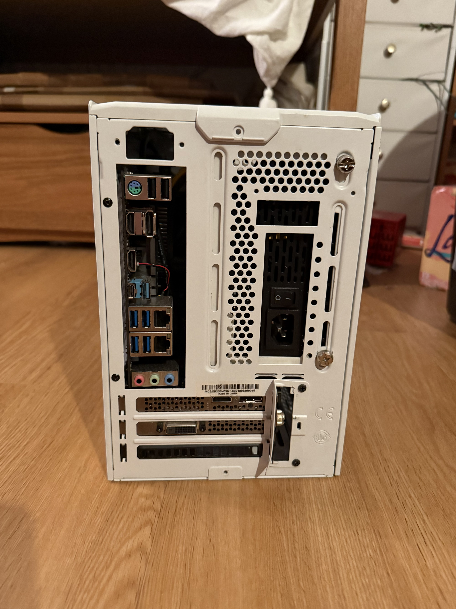
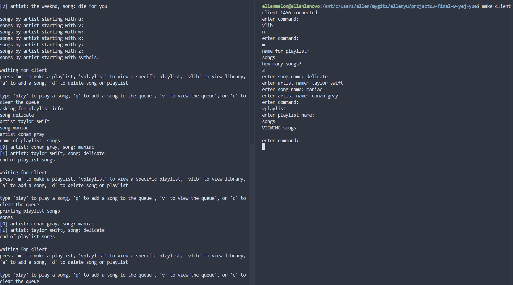
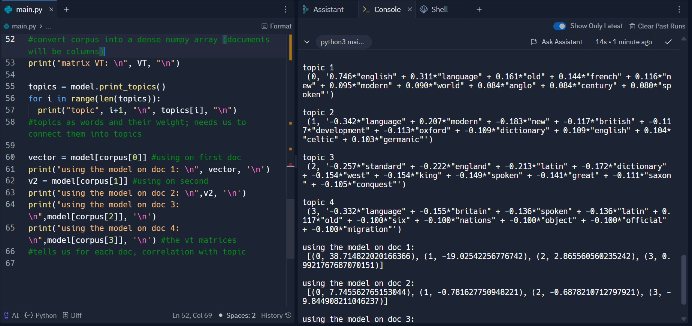
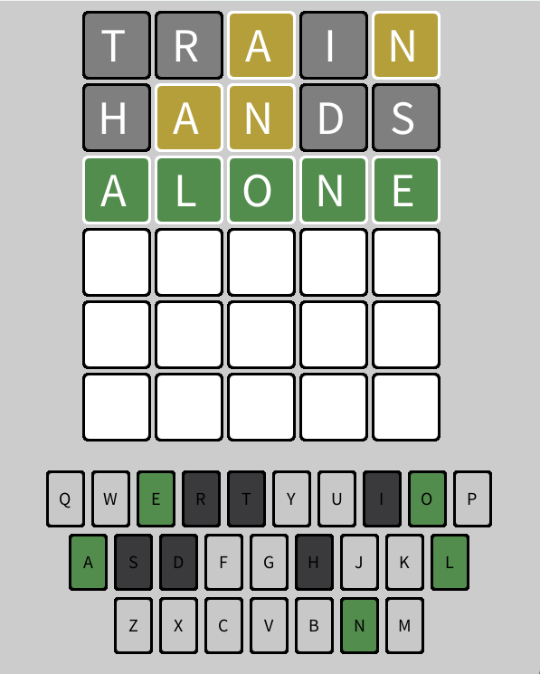

Homemade PC: Designed and built a custom PC tower from used parts. This features an Intel Core i7-8700 processor, 32GB RAM, 512GB NVMe SSD, 8TB HDD, and an NVIDIA GeForce RTX 2060 graphics card.It demonstrates hands-on hardware knowledge and the ability to create a fully functional computing platform.
Shell Copycat: Created a fully functional Linux-style shell from scratch. It supports standard terminal commands, I/O redirection, piping, and background job control. The shell also handles process management, signal handling, and error reporting for a smooth user experience.

Multiclient-Server Music Library: Developed an interactive, networked music library application using TCP socket programming. The system supports simultaneous multi-user sessions, music streaming, and dynamic editing of playlists and personal libraries. It demonstrates real-time communication between client and server with efficient resource handling.

Latent Semantic Analysis: Implemented a text analysis tool that identifies common themes across documents using latent semantic analysis. The program leverages singular value decomposition (SVD) and natural language processing libraries to uncover semantic structure from text data. It's useful for clustering, summarization, or comparing large sets of documents.

Wordle: Recreated the popular Wordle game with a clean, interactive interface and fully functional game logic. The program includes accurate letter and word matching, keyboard input handling, and visual feedback. It offers an engaging user experience while maintaining the core rules and feel of the original game.
IPA Quiz: Created an interactive IPA quiz that pairs phonetic transcription with real audio pronunciations. The project processes lexical data, fetches and converts pronunciation audio, and presents users with listening-based questions to strengthen sound–symbol recognition. Built with automated audio handling, text parsing, and a lightweight frontend for responsive practice.